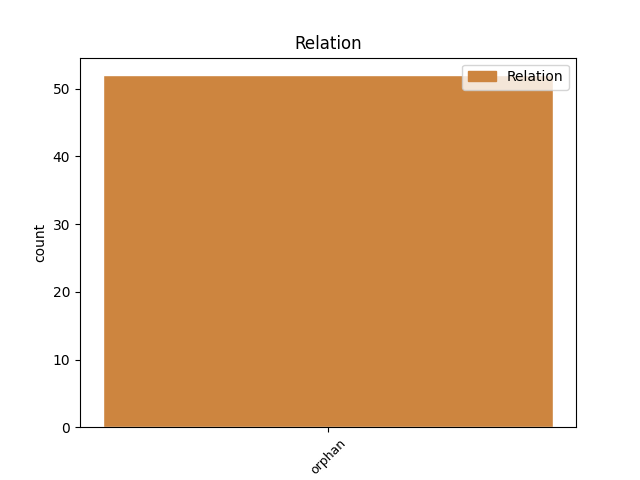
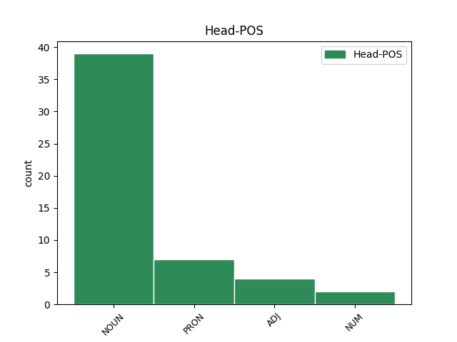
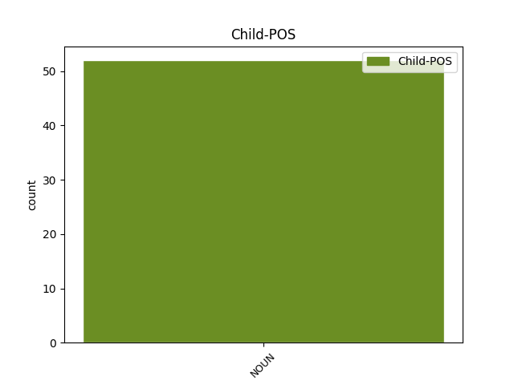

Distribution of features within this leaf



Agreement Rules sorted by frequency.
- When the dependent token is the orphan(orphan) of the head token, and the head token is NOUN and the dependent token is NOUN.
1 Průvodce _ _ _ _ 0 _ _ _
2 totiž _ _ _ _ 0 _ _ _
3 informoval _ _ _ _ 0 _ _ _
4 o _ _ _ _ 0 _ _ _
5 tom _ _ _ _ 0 _ _ _
6 , _ _ _ _ 0 _ _ _
7 jak _ _ _ _ 0 _ _ _
8 je _ _ _ _ 0 _ _ _
9 vesnička _ _ _ _ 0 _ _ _
10 romantická _ _ _ _ 0 _ _ _
11 , _ _ _ _ 0 _ _ _
12 výhled výhled NOUN NNIS1-----A---- Animacy=Inan|Case=Nom|Gender=Masc|Number=Sing|Polarity=Pos 0 _ _ _
13 velkolepý _ _ _ _ 0 _ _ _
14 , _ _ _ _ 0 _ _ _
15 jídlo _ _ _ _ 0 _ _ _
16 znamenité _ _ _ _ 0 _ _ _
17 a _ _ _ _ 0 _ _ _
18 ceny cena NOUN NNFP1-----A---- Case=Nom|Gender=Fem|Number=Plur|Polarity=Pos 12 orphan _ _
19 tak _ _ _ _ 0 _ _ _
20 nízké _ _ _ _ 0 _ _ _
21 , _ _ _ _ 0 _ _ _
22 že _ _ _ _ 0 _ _ _
23 si _ _ _ _ 0 _ _ _
24 dokonce _ _ _ _ 0 _ _ _
25 vesnický _ _ _ _ 0 _ _ _
26 blázen _ _ _ _ 0 _ _ _
27 Mirco _ _ _ _ 0 _ _ _
28 raději _ _ _ _ 0 _ _ _
29 vybere _ _ _ _ 0 _ _ _
30 minci _ _ _ _ 0 _ _ _
31 v _ _ _ _ 0 _ _ _
32 hodnotě _ _ _ _ 0 _ _ _
33 čtvrt _ _ _ _ 0 _ _ _
34 dináru _ _ _ _ 0 _ _ _
35 , _ _ _ _ 0 _ _ _
36 protože _ _ _ _ 0 _ _ _
37 je _ _ _ _ 0 _ _ _
38 na _ _ _ _ 0 _ _ _
39 pohled _ _ _ _ 0 _ _ _
40 větší _ _ _ _ 0 _ _ _
41 než _ _ _ _ 0 _ _ _
42 mince _ _ _ _ 0 _ _ _
43 v _ _ _ _ 0 _ _ _
44 hodnotě _ _ _ _ 0 _ _ _
45 půl _ _ _ _ 0 _ _ _
46 dináru _ _ _ _ 0 _ _ _
47 . _ _ _ _ 0 _ _ _
1 Kdo _ _ _ _ 0 _ _ _
2 ví _ _ _ _ 0 _ _ _
3 , _ _ _ _ 0 _ _ _
4 kdo _ _ _ _ 0 _ _ _
5 se _ _ _ _ 0 _ _ _
6 kdy _ _ _ _ 0 _ _ _
7 bude _ _ _ _ 0 _ _ _
8 takhle _ _ _ _ 0 _ _ _
9 probírat _ _ _ _ 0 _ _ _
10 našimi _ _ _ _ 0 _ _ _
11 dopisy _ _ _ _ 0 _ _ _
12 netuše _ _ _ _ 0 _ _ _
13 , _ _ _ _ 0 _ _ _
14 kdo _ _ _ _ 0 _ _ _
15 vlastně _ _ _ _ 0 _ _ _
16 byl _ _ _ _ 0 _ _ _
17 odesilatel _ _ _ _ 0 _ _ _
18 , _ _ _ _ 0 _ _ _
19 kdo kdo PRON PKM-1---------- Animacy=Anim|Case=Nom|Gender=Masc|PronType=Int,Rel 0 _ _ _
20 adresát adresát NOUN NNMS1-----A---- Animacy=Anim|Case=Nom|Gender=Masc|Number=Sing|Polarity=Pos 19 orphan _ SpaceAfter=No
21 . _ _ _ _ 0 _ _ _
1 Tlak _ _ _ _ 0 _ _ _
2 sedmdesát sedmdesát NUM Cn-S1---------- Case=Nom|Number=Sing|NumForm=Word|NumType=Card 0 _ _ _
3 na _ _ _ _ 0 _ _ _
4 čtyřicet _ _ _ _ 0 _ _ _
5 , _ _ _ _ 0 _ _ _
6 puls _ _ _ _ 0 _ _ _
7 nehmatný _ _ _ _ 0 _ _ _
8 , _ _ _ _ 0 _ _ _
9 akce akce NOUN NNFS1-----A---- Case=Nom|Gender=Fem|Number=Sing|Polarity=Pos 2 orphan _ _
10 srdeční _ _ _ _ 0 _ _ _
11 nepravidelná _ _ _ _ 0 _ _ _
12 . _ _ _ _ 0 _ _ _
1 Nejrychlejší _ _ _ _ 0 _ _ _
2 jsou _ _ _ _ 0 _ _ _
3 naše _ _ _ _ 0 _ _ _
4 koně _ _ _ _ 0 _ _ _
5 a _ _ _ _ 0 _ _ _
6 nejsladší sladký ADJ AAIS1----3A---- Animacy=Inan|Case=Nom|Degree=Sup|Gender=Masc|Number=Sing|Polarity=Pos 0 _ _ _
7 med med NOUN NNIS1-----A---- Animacy=Inan|Case=Nom|Gender=Masc|Number=Sing|Polarity=Pos 6 orphan _ _
8 z _ _ _ _ 0 _ _ _
9 našich _ _ _ _ 0 _ _ _
10 úlů _ _ _ _ 0 _ _ _
11 ! _ _ _ _ 0 _ _ _
12 " _ _ _ _ 0 _ _ _
Disagree Examples:
1 Umím _ _ _ _ 0 _ _ _
2 si _ _ _ _ 0 _ _ _
3 je _ _ _ _ 0 _ _ _
4 docela _ _ _ _ 0 _ _ _
5 dobře _ _ _ _ 0 _ _ _
6 představit _ _ _ _ 0 _ _ _
7 , _ _ _ _ 0 _ _ _
8 drobounkou _ _ _ _ 0 _ _ _
9 babičku _ _ _ _ 0 _ _ _
10 a _ _ _ _ 0 _ _ _
11 moji _ _ _ _ 0 _ _ _
12 malou _ _ _ _ 0 _ _ _
13 maminku _ _ _ _ 0 _ _ _
14 , _ _ _ _ 0 _ _ _
15 jak _ _ _ _ 0 _ _ _
16 chodí _ _ _ _ 0 _ _ _
17 k _ _ _ _ 0 _ _ _
18 lípě _ _ _ _ 0 _ _ _
19 , _ _ _ _ 0 _ _ _
20 babička _ _ _ _ 0 _ _ _
21 vleče _ _ _ _ 0 _ _ _
22 velkou _ _ _ _ 0 _ _ _
23 konev _ _ _ _ 0 _ _ _
24 , _ _ _ _ 0 _ _ _
25 maminka maminka NOUN NNFS1-----A---- Case=Nom|Gender=Fem|Number=Sing|Polarity=Pos 0 _ _ _
26 konývku konývka NOUN NNFS4-----A---- Case=Acc|Gender=Fem|Number=Sing|Polarity=Pos 25 orphan _ SpaceAfter=No
27 . _ _ _ _ 0 _ _ _
1 Na _ _ _ _ 0 _ _ _
2 dvorku _ _ _ _ 0 _ _ _
3 za _ _ _ _ 0 _ _ _
4 hospodou _ _ _ _ 0 _ _ _
5 se _ _ _ _ 0 _ _ _
6 otevřely _ _ _ _ 0 _ _ _
7 dveře _ _ _ _ 0 _ _ _
8 kůlny _ _ _ _ 0 _ _ _
9 a _ _ _ _ 0 _ _ _
10 z _ _ _ _ 0 _ _ _
11 nich _ _ _ _ 0 _ _ _
12 vyšel _ _ _ _ 0 _ _ _
13 malý _ _ _ _ 0 _ _ _
14 chlapec _ _ _ _ 0 _ _ _
15 a _ _ _ _ 0 _ _ _
16 vedle _ _ _ _ 0 _ _ _
17 něho on PRON P5MS2--3------1 Animacy=Anim|Case=Gen|Gender=Masc|Number=Sing|Person=3|PrepCase=Pre|PronType=Prs 0 _ _ _
18 - _ _ _ _ 0 _ _ _
19 anděl anděl NOUN NNMS1-----A---- Animacy=Anim|Case=Nom|Gender=Masc|Number=Sing|Polarity=Pos 17 orphan _ SpaceAfter=No
20 . _ _ _ _ 0 _ _ _
1 Muži _ _ _ _ 0 _ _ _
2 měli _ _ _ _ 0 _ _ _
3 kravaty _ _ _ _ 0 _ _ _
4 , _ _ _ _ 0 _ _ _
5 ženy žena NOUN NNFP1-----A---- Case=Nom|Gender=Fem|Number=Plur|Polarity=Pos 0 _ _ _
6 róby róba NOUN NNFP4-----A---- Case=Acc|Gender=Fem|Number=Plur|Polarity=Pos 5 orphan _ SpaceAfter=No
7 , _ _ _ _ 0 _ _ _
8 kouřilo _ _ _ _ 0 _ _ _
9 se _ _ _ _ 0 _ _ _
10 tu _ _ _ _ 0 _ _ _
11 , _ _ _ _ 0 _ _ _
12 povídalo _ _ _ _ 0 _ _ _
13 , _ _ _ _ 0 _ _ _
14 ozýval _ _ _ _ 0 _ _ _
15 se _ _ _ _ 0 _ _ _
16 smích _ _ _ _ 0 _ _ _
17 . _ _ _ _ 0 _ _ _
1 Shaffer _ _ _ _ 0 _ _ _
2 dal _ _ _ _ 0 _ _ _
3 do _ _ _ _ 0 _ _ _
4 banku _ _ _ _ 0 _ _ _
5 svou _ _ _ _ 0 _ _ _
6 hru _ _ _ _ 0 _ _ _
7 a _ _ _ _ 0 _ _ _
8 filmový _ _ _ _ 0 _ _ _
9 scénář _ _ _ _ 0 _ _ _
10 , _ _ _ _ 0 _ _ _
11 já já PRON PP-S1--1------- Case=Nom|Number=Sing|Person=1|PronType=Prs 0 _ _ _
12 dva _ _ _ _ 0 _ _ _
13 roky rok NOUN NNIP4-----A---- Animacy=Inan|Case=Acc|Gender=Masc|Number=Plur|Polarity=Pos 11 orphan _ _
14 života _ _ _ _ 0 _ _ _
15 a _ _ _ _ 0 _ _ _
16 Zaentz _ _ _ _ 0 _ _ _
17 veškerý _ _ _ _ 0 _ _ _
18 základní _ _ _ _ 0 _ _ _
19 kapitál _ _ _ _ 0 _ _ _
20 . _ _ _ _ 0 _ _ _
1 Shaffer _ _ _ _ 0 _ _ _
2 dal _ _ _ _ 0 _ _ _
3 do _ _ _ _ 0 _ _ _
4 banku _ _ _ _ 0 _ _ _
5 svou _ _ _ _ 0 _ _ _
6 hru _ _ _ _ 0 _ _ _
7 a _ _ _ _ 0 _ _ _
8 filmový _ _ _ _ 0 _ _ _
9 scénář _ _ _ _ 0 _ _ _
10 , _ _ _ _ 0 _ _ _
11 já já PRON PP-S1--1------- Case=Nom|Number=Sing|Person=1|PronType=Prs 0 _ _ _
12 dva _ _ _ _ 0 _ _ _
13 roky _ _ _ _ 0 _ _ _
14 života _ _ _ _ 0 _ _ _
15 a _ _ _ _ 0 _ _ _
16 Zaentz _ _ _ _ 0 _ _ _
17 veškerý _ _ _ _ 0 _ _ _
18 základní _ _ _ _ 0 _ _ _
19 kapitál kapitál NOUN NNIS4-----A---- Animacy=Inan|Case=Acc|Gender=Masc|Number=Sing|Polarity=Pos 11 orphan _ SpaceAfter=No
20 . _ _ _ _ 0 _ _ _